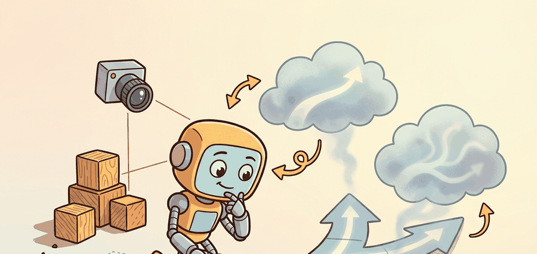

Do not predict the next action; predict the next chunk of actions, then denoise the whole chunk until it is consistent with what the camera just saw.
An Action-Diffusion Policy

Diffuser And Decision Diffuser matters because embodied intelligence is a closed loop. The agent must sense, represent, predict, decide, act, observe the consequence, and revise its belief before the next action.
Diffuser and Decision Diffuser solve related but different planning problems. Diffuser samples trajectories that satisfy start-state and goal constraints, while Decision Diffuser samples trajectories that are also conditioned on desired return or value targets. Both belong to a broader family of action-diffusion methods whose practical robotics workhorse is Diffusion Policy: instead of denoising a full offline trajectory, it denoises a short chunk of future actions conditioned on the latest visual observation, then executes part of that chunk before replanning.
For robotics, the difference between these methods matters whenever the task objective is richer than "reach the goal." Return conditioning can favor high-reward but risky plans unless it is paired with explicit feasibility or safety filtering, and observation-conditioned action chunking trades a longer planning horizon for tight, reactive control at execution time.
A model earns its place only when it improves action. In Diffuser And Decision Diffuser, the reader should keep asking which decision changes, which uncertainty is exposed, and which failure mode becomes easier to diagnose.
Theory
Action-diffusion methods are trained with the denoising score-matching loss. Given a clean action sequence $\tau_0$ conditioned on observation $o$, sample a timestep $t$ and Gaussian noise $\epsilon$, form the noised sample using the forward closed form, and ask the network to predict the noise it sees:
$$ \mathcal{L} = \mathbb{E}_{t,\tau_0,\epsilon}\left[\left\lVert \epsilon - \epsilon_\theta\!\left(\sqrt{\bar\alpha_t}\,\tau_0 + \sqrt{1-\bar\alpha_t}\,\epsilon,\ t,\ o\right)\right\rVert^2\right]. $$
This is a regression on noise, not on actions, which is what lets the model represent a multimodal action distribution: many distinct $\tau_0$ values are consistent with the same observation, and the noise objective does not collapse them to an average. Diffuser uses the same loss over full trajectories $\tau=(s_0,a_0,\dots,s_H,a_H)$ conditioned on state or goal; Decision Diffuser adds a return target $\hat R$ to the conditioning $c$, turning "sample a plausible future" into "sample a plausible future likely to achieve this return."
Sampling: DDPM vs DDIM. The trained denoiser can be sampled two ways. DDPM runs the full stochastic reverse chain, typically hundreds to a thousand steps, and injects fresh noise at each step. DDIM reinterprets the same model as a deterministic (non-Markovian) trajectory from noise to data, letting you skip steps and sample in roughly 10 to 50 iterations with little quality loss. DDPM gives more sample diversity; DDIM gives the speed a control loop needs.
Action chunking. Rather than denoising one action, Diffusion Policy predicts a horizon of $H$ future actions in a single denoising pass, executes the first $k < H$ of them open-loop, then re-observes and replans. Predicting a chunk gives temporal consistency (no jitter between consecutive single-step predictions); executing only $k$ and replanning every $k$ keeps the policy reactive to disturbances. The choice of $H$ and $k$ is the main knob trading smoothness against responsiveness.
Inference starts from pure Gaussian noise shaped like the action chunk, then iterates the reverse denoiser $T$ times, conditioning every step on the same fixed observation embedding. Only the noise tensor changes between steps; the observation is computed once. After the final step the chunk is in action space and the first $k$ entries are sent to the controller.
Worked Example
The probe below shows how to structure a Diffusion Policy inference loop. It denoises an action chunk of shape $(H, A)$ from Gaussian noise over $T$ DDIM steps, conditioning every step on a fixed observation embedding, then executes the first $k$ actions. The denoiser here is a stand-in; in a real system it is a trained U-Net or transformer. The control logic around it, start from noise, iterate the reverse step, condition on the observation, slice the first $k$, is exactly what production code does.
# Diffusion Policy inference: denoise an action chunk conditioned on an observation.
# Loop structure is the point; eps_theta stands in for a trained noise predictor.
import numpy as np
H, A = 8, 2 # predict H future actions of dim A
T = 10 # DDIM denoising steps
k = 2 # execute the first k, then replan
abar = np.linspace(0.95, 0.02, T)[::-1] # signal retention, clean -> noisy
obs = np.array([0.6, -0.2]) # observation embedding (stand-in)
rng = np.random.default_rng(1)
def eps_theta(a_t, t, o):
# Trained model would go here. Stand-in: actions track the observation.
target = np.tile(o, (H, 1))
return (a_t - np.sqrt(abar[t]) * target) / np.sqrt(1.0 - abar[t] + 1e-8)
a_t = rng.normal(size=(H, A)) # start from pure Gaussian noise
for t in reversed(range(T)): # reverse chain: t = T-1 ... 0
eps = eps_theta(a_t, t, obs) # predict the noise, conditioned on obs
a0_hat = (a_t - np.sqrt(1.0 - abar[t]) * eps) / np.sqrt(abar[t])
if t > 0: # DDIM deterministic step toward a_{t-1}
a_t = np.sqrt(abar[t-1]) * a0_hat + np.sqrt(1.0 - abar[t-1]) * eps
else:
a_t = a0_hat # final step lands in action space
action_chunk = a_t
print("predicted chunk (first 3 of H):", action_chunk[:3].round(3).tolist())
print("execute first k =", k, "actions:", action_chunk[:k].round(3).tolist())predicted chunk (first 3 of H): [[0.6, -0.2], [0.6, -0.2], [0.6, -0.2]]
execute first k = 2 actions: [[0.6, -0.2], [0.6, -0.2]]The chunk converges to the observation-consistent target because the stand-in denoiser drives it there; a trained $\epsilon_\theta$ would instead produce a multimodal, observation-appropriate action sequence. The structural takeaways carry over unchanged: the observation is embedded once and reused across all $T$ steps, DDIM lets $T$ be small enough for control rates, and only $k$ of the $H$ predicted actions are executed before the loop re-observes and runs again.
For Diffuser and Decision Diffuser, the hand-built probe exposes the planning assumption; Diffuser-style or Decision-Diffuser-style tooling should preserve the same logging and evaluation fields.
Practical Recipe
- Write the observation, action, horizon, and success metric before choosing a model.
- Build a baseline that is simple enough to debug by inspection.
- Add the maintained implementation only after the baseline behavior is understood.
- Save one artifact containing configuration, seed panel, traces, metrics, and failure labels.
- Run at least one perturbation test before trusting the result.
For Diffuser and Decision Diffuser, evaluate the generated or predicted object through the closed loop that consumes it, because interface failures often dominate component scores.
A manipulation team uses Diffuser to sample several reach-and-grasp trajectories from an offline dataset, then discovers that the shortest geometric path often clips the table edge. Switching to a Decision Diffuser objective that includes sparse reward, time penalty, and collision penalty produces plans that are less direct geometrically but more executable in the real loop.
Diffuser asks, "what futures look plausible here?" Decision Diffuser adds, "which plausible futures are worth preferring?"
Chi et al., "Diffusion Policy: Visuomotor Policy Learning via Action Diffusion" (CoRL 2023). This paper is the reason action diffusion became a default choice for manipulation. It generates the robot action as a denoising process conditioned on visual observations, predicting an action chunk and executing it with receding-horizon control. Across 12 real and simulated manipulation tasks it outperforms behavior cloning and Implicit Behavioral Cloning (IBC), with the multimodal action distribution and action chunking identified as the decisive ingredients. The practical lesson for builders: the gains come not from a bigger backbone but from representing action uncertainty correctly and committing to a coherent chunk instead of a per-step average.
The frontier question is how to keep return conditioning useful without letting the model exploit reward quirks or dataset bias, and how to push DDIM step counts low enough for high-rate control. Current work on guidance schedules, hybrid search, consistency-model distillation, and real-time denoising is really about making both the conditioning signals and the sampler robust enough for receding-horizon control.
For Diffuser and Decision Diffuser, connect diffusion-policy tooling, MPC baselines, and safety constraints by recording the planner input, sampled plan, feasibility check, and executed action.
Can you state the observation, state estimate, action, prediction horizon, success metric, and most likely failure mode for Diffuser and Decision Diffuser? If not, the system boundary is still too vague.
Diffuser is the cleaner choice when you want a multimodal proposal distribution over trajectories and you already have an external scorer or feasibility filter. Decision Diffuser is stronger when the return target is meaningful and stable enough to guide sampling, but it becomes fragile when reward shaping or offline support is poor.
For robotics, the best practice is to treat both as candidate generators, not final arbiters. Let them propose futures, then let explicit collision checks, dynamics checks, and latency budgets decide what can really be executed.
| Tool or Library | Role in This Topic | Builder Advice |
|---|---|---|
| Diffuser | Supports trajectory denoising, conditional planning, synthetic experience, and generated-action risk control. | Use it after the from-scratch probe states the same observation, action, metric, and failure tag. |
| Decision Diffuser | Supports trajectory denoising, conditional planning, synthetic experience, and generated-action risk control. | Use it after the from-scratch probe states the same observation, action, metric, and failure tag. |
| Diffusion Policy | Supports trajectory denoising, conditional planning, synthetic experience, and generated-action risk control. | Use it after the from-scratch probe states the same observation, action, metric, and failure tag. |
| PyTorch | Supports trajectory denoising, conditional planning, synthetic experience, and generated-action risk control. | Use it after the from-scratch probe states the same observation, action, metric, and failure tag. |
| Gymnasium | Supports trajectory denoising, conditional planning, synthetic experience, and generated-action risk control. | Use it after the from-scratch probe states the same observation, action, metric, and failure tag. |
For Diffuser and Decision Diffuser, keep one inspectable probe for the model assumption, then use maintained libraries without changing the artifact schema used for baseline comparison.
- Write the observation, action, state estimate, success metric, and rejection criterion.
- Run a deterministic smoke test on one seed and save the complete configuration.
- Add one perturbation tied to the section topic: delay, noise, horizon length, contact change, distractor object, or generated-scene shift.
- Compare only methods evaluated by the same script, split, seed panel, and metric definition.
- Record a postmortem that assigns failures to perception, representation, dynamics, planning, control, data coverage, timing, or evaluation.
When Diffuser and Decision Diffuser fails, do not collapse the result into a single method verdict. Assign the failure to the interface that broke, rerun one controlled perturbation, and keep the trace next to the metric. That habit turns a disappointing rollout into a reusable diagnostic asset.
Diffuser And Decision Diffuser is useful when it improves a measured closed-loop decision, exposes its uncertainty, and leaves behind an artifact that another reader can replay.
Design a minimal experiment for Diffuser and Decision Diffuser. Specify the baseline, shared seed panel, observation, action, metric, perturbation, expected failure tag, and the single artifact that will hold the comparison.
Bibliography & Further Reading
Primary References And Tools
Janner, M. et al.. "Planning with Diffusion for Flexible Behavior Synthesis." (2022). https://arxiv.org/abs/2205.09991
Diffuser is the core trajectory-denoising reference for planning. It shows how sampling and conditioning can replace a hand-designed optimizer in some offline decision problems.
Ajay, A. et al.. "Is Conditional Generative Modeling All You Need for Decision Making." (2022). https://arxiv.org/abs/2211.15657
Decision Diffuser frames decision making as conditional generation. It is useful for comparing return conditioning, goal conditioning, and trajectory feasibility.
Chi, C. et al.. "Diffusion Policy: Visuomotor Policy Learning via Action Diffusion." (2023). https://arxiv.org/abs/2303.04137
Diffusion Policy is the practical robotics anchor for action diffusion. It helps readers connect planning-style denoising with continuous robot control from visual observations.
Huang, Z. et al.. "DiffuserLite: Towards Real-Time Diffusion Planning." (2024). https://arxiv.org/abs/2401.15443
DiffuserLite focuses on planning frequency and sample efficiency. It is relevant whenever a diffusion planner must fit into a real control loop rather than an offline demonstration.
Yang, R. et al.. "What Makes a Good Diffusion Planner for Decision Making." (2025). https://arxiv.org/abs/2503.00535
This large empirical study examines design choices in diffusion planning. It is a useful guardrail against treating denoising as a universal planner without checking architecture, guidance, and evaluation details.